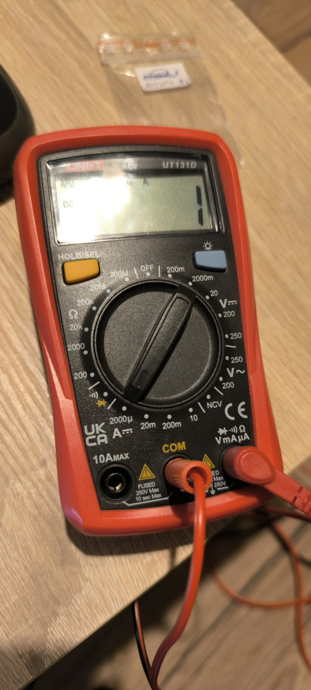
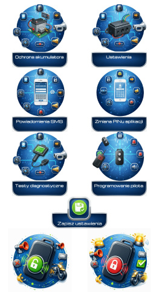

Alarm motocyklowy z powiadomieniami SMS i Bluetooth

Głównym założeniem projektu było stworzenie alarmu motocyklowego z czujnikiem na bazie akcelerometru oraz powiadomieniami SMS. System posiada Bluetooth z aplikacją mobilną do zmiany ustawień, kontrolę stanu akumulatora oraz kodowany pilot z systemem rolling code.
PILOT
Zbudowany na układzie ATTINY85, do nadawania sygnału wykorzystuje SYN115. Zasilany baterią CR2032. Mikrokontroler jest stale w trybie uśpienia, a nadajnik wyłączony.
Pobór prądu pilota w uśpieniu: 1µA

Mikrostyki poprzez przerwanie wybudzają ATTINY85, a ten w zależności który mikrostyk go wybudził wysyła poprzez SYN115 7 ramek kodu (KEELOQ + rolling code).


ALARM
Sercem alarmu jest STM32F401RET6 pracuje w cyklach, 500ms śpi, 50ms czeka na preambułę sygnału z pilota, gdy ją odbierze przedłuża sobie czas na odebranie całej ramki.
Pilot nadaje 7 ramek, więc jeżeli zacznie nadawań w momencie gdy STM32 śpi, to któraś z ramek i tak zostanie odebrana po wybudzeniu.
Na czas uśpienia układ odbiorczy SYN480, akcelerometr LIS2dw12 są wyłączane za pośrednictwem power swicha. Pamięć eeprom, moduł sim, są włączane tylko po włączeniu alarmu.
Średni pobór prądu przez alarm: ok. 700µA
Alarm "pilnuje" pozycji motocykla oraz siedziska. Jako czujnik ruchu wykorzystałem akcelerometr LIS2DW12, dzięki czemu alarm wykrywa ruch we wszystkich osiach.
Jako czujnik otwarcia siedziska może być wykorzystany kontaktron + magnes, lub zwykła krańcówka zwierająca do masy motocykla.
Po wykryciu ruchu, lub otwarcia siedziska włącza się alarm, steruje on kierunkowskazami i klaksonem generując sygnał o częstotliwości 1Hz, oraz włącza +12V dla syreny
oraz przekaźnika do odcięcia zapłonu.
Zostaje wysłany sms z powiadomienie o alarmie oraz co go wyzwoliło, zdarzenie to jest zapisywanie w historii wraz z datą i godziną pobraną z modułu sim. W alarmie jako moduł sim
wykorzystałem moduł LTE A7682E.
Uzbrojenie alarmu jest sygnalizowane przez krótki sygnał dla kierunkowskazów oraz klaksonu, rozbrojenie przez 2 krótkie sygnały dla kierunkowskazów i klaksonu.
Jeżeli Alarm jest już uzbrojony lub rozbrojony schemat jet taki sam z tym że migają tylko kierunkowskazy.
W celu ochrony akumulatora w motocyklu są dwa progi powiadomień. Domyślnie to 12V dla powiadomienia o potrzebie podładowania akumulatora i 11V dla powiadomienia o rozładowanym akumulatorze.
Częstotliwość pomiaru napięcia akumulatora można ustawić w aplikacji. Dzielnik napięcia jest włączony poprzez mosfet tylko na czas pomiaru napięcia gdy nadejdzie na to pora.

APLIKACJA MOBILNA
Moduł Bluetooth jest włączany tylko po przekręceniu stacyjki. Ponowne wyłączenie stacyjki, lub uruchomienie silnika wyłącza moduł bluetooth.
Moduł bluetooth to AT-09, czyli w technologi BLE. Gdy bluetooth jest włączony można się połączyć aplikacją w telefonie z alarmem.
Komunikacja pomiędzy alarmem a aplikacją jest kodowana. Gdy łączymy się po raz pierwszy, czy to po instalacji aplikacji, lub wyczyszczeniu jej pamięci trzeba podać i sześciu cyfrowy numer z obudowy alarmu.
Zapobiega to dostępu z innego telefonu z zainstalowaną aplikacją. Po sparowaniu aplikacji z alarmem należy podać numer pin.
Przy pierwszym uruchomieniu domyślny, można go zmienić w każdej chwili w aplikacji. Trzykrotne wpisanie błędnego pinu spowoduje wysłanie sms z przypomnieniem numeru pin.
Aplikacja daje dostęp do ustawień alarmu oraz testów diagnostycznych.
W aplikacji można w niej ustawić:
- numer telefonu dla powiadomień sms
- włączyć / wyłączyć numer USSD do sprawdzenia salda karty jeżeli korzystamy z karty prepaid
- progu napięcia powiadomienia potrzeby podładowania akumulatora
- progu napięcia powiadomienia o rozładowanym akumulatorze
- częstotliwości kontroli napięcia akumulatora
- czułość akcelerometru
- czas trwania impulsu powiadomienia dla kierunkowskazów i klaksonu
- czas trwania alarmu
- numer PIN
- zaprogramować pilot
- uzbroić / rozbroić alarm
W diagnostyce możemy przetestować:
- sterowanie kierunkowskazami
- sterowanie klaksonem
- sterowanie syreną
- sprawdzić działanie akcelerometru w raz z wykrywaniem ruchu
- sprawdzić działanie modułu sim wraz z wysłaniem testowego sms o raz sprawdzić saldo karty sim
- odczytać historie dziesięciu ostatnich zdążeń takich jak wykrycie ruchu, otwarcie siedziska, powiadomienia do stanie akumulatora, przypomnienie numeru pin.
